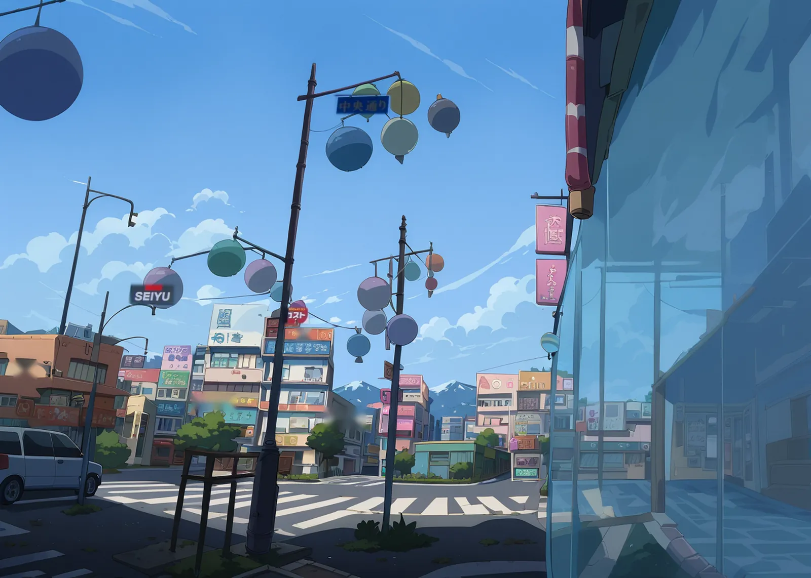
10/3(土) 秋祭り2026 開催決定
たけにし、よりみち日和。
竹ノ塚駅西口を出たら、今日の「いいね」に会いにいこう。
竹の塚西口 秋祭り10/3(土)11:00 – 15:00見どころを見る →中央通り、こっち！
scroll
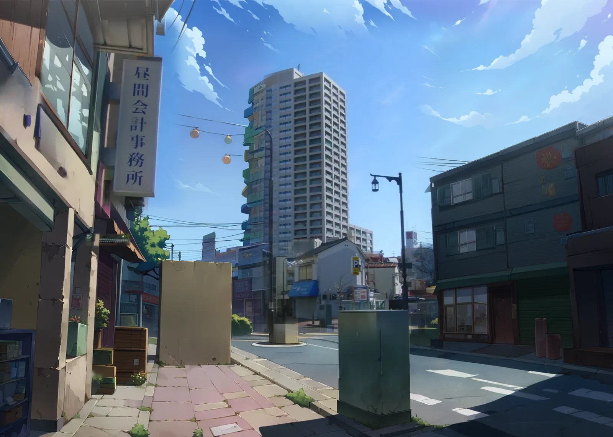
あ、掲示板！
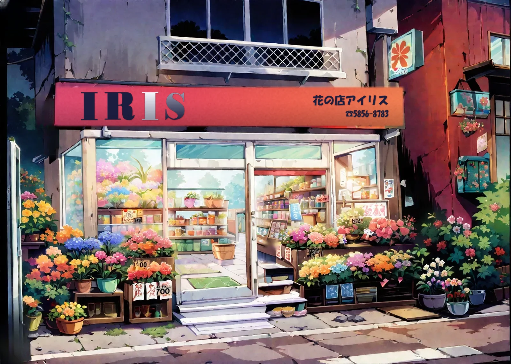
About
駅を出てすぐ。
いつもの買い物も、ちょっとした寄り道も。
「笑顔が集まる、心あたたまる街」。駅前の中央通りに、昔ながらのお店と新しいお店が肩を並べています。「いつもの」と言えば通じる距離感が、たけにしの自慢です。
こんにちは！
お花、きれい〜
Main Shops
中央通りを、ひとまわり。
スクロールすると通りが流れます。気になるお店をタップ。
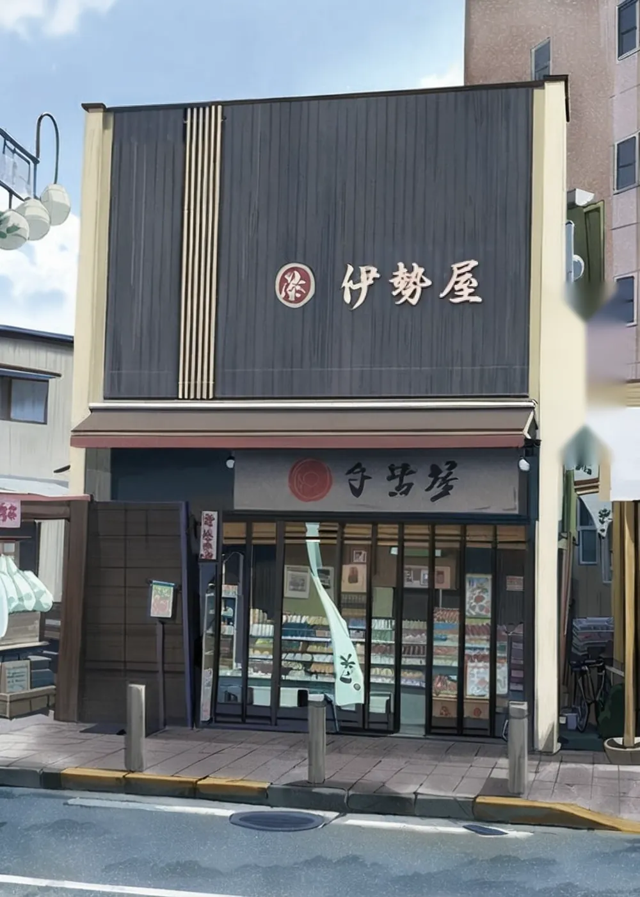
お団子1本から伊勢屋 菓子店和菓子店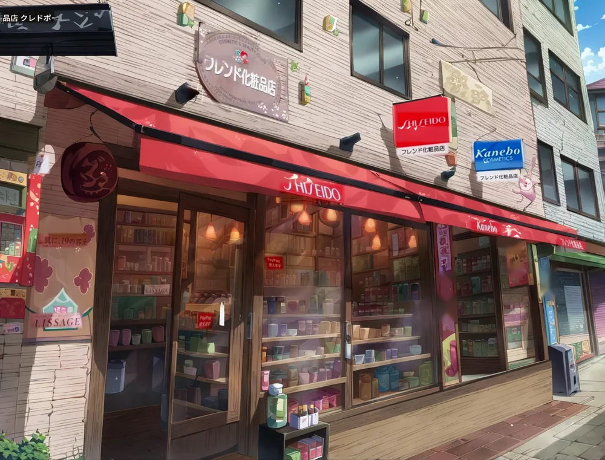
お肌の相談もフレンド化粧品店化粧品店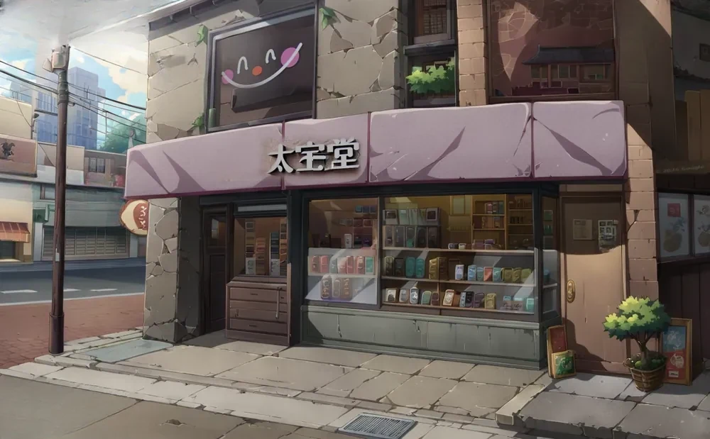
眼鏡の調整OK太宝堂眼鏡・時計店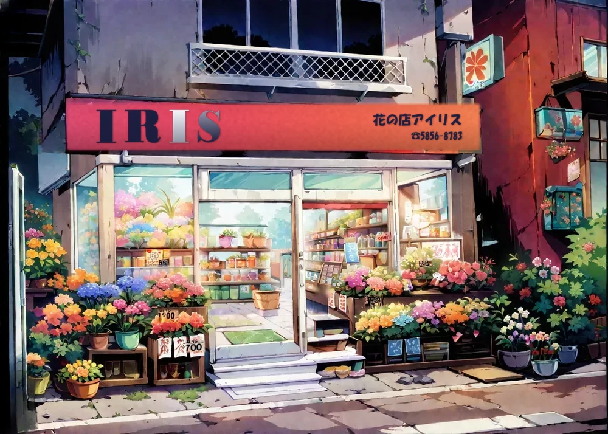
季節の花花の店 アイリス生花店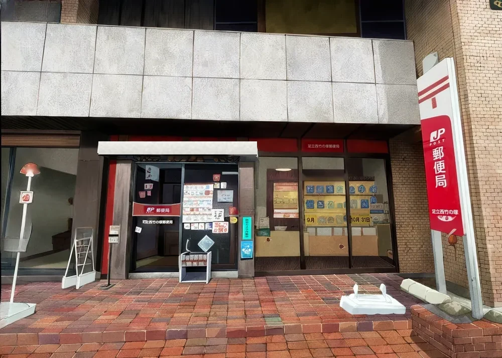
中央通りの真ん中足立西竹の塚郵便局郵便局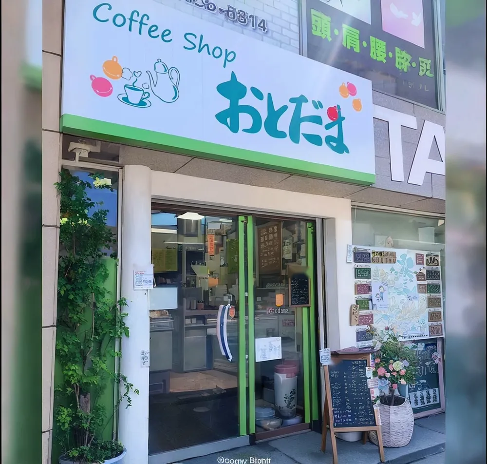
ひと休みにおとだま喫茶店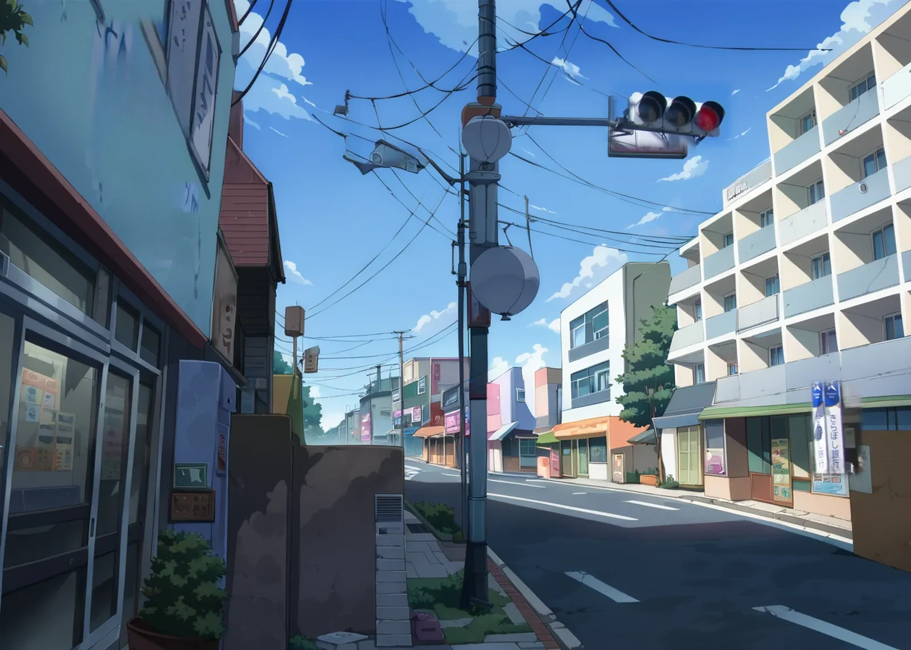
たけにしのお店 全26軒
店名をタップすると店舗ページへ（各店の紹介は順次公開）。🍁は秋祭り当日の特典があるお店。
- 💐花の店 アイリス生花店🍁 秋祭り特典
- 🍡伊勢屋 菓子店和菓子店🍁 秋祭り特典
- 👔大友クリーニング商会クリーニング店
- ☕おとだま喫茶店
- 🍶喜作居酒屋
- 🍫ショコラトリー リス洋菓子店
- 👓太宝堂眼鏡・時計店
- 🔧竹の塚住設住宅設備
- 🍘竹の塚せんべい店せんべい店🍁 秋祭り特典
- 🍶たけのぼり居酒屋🍁 秋祭り特典
- 🍶鳥の王様居酒屋
- 💻竹の塚パソコン・スマホ教室教育
- 💄フレンド化粧品店化粧品店
- 👗カジュアルショップ マキタ婦人服店🍁 秋祭り特典
- 🍶くいのみや まるみ居酒屋
- 🍅八百政青果店
- 🍜らーめん 梁山泊ラーメン店🍁 秋祭り特典
- 📮足立西竹の塚郵便局郵便局🍁 秋祭り特典
- 🍢焼鳥が止まらない店 焼き膳 彩鳥焼鳥🍁 秋祭り特典
- 🍸スナックWAKAスナック🍁 秋祭り特典
- 🏠畑直ステーション 竹ノ塚店
- 🗣イングリッシュコーナー 英会話スクール 竹ノ塚校英会話
- 🍣宝鮨寿司
- 💍イコー質店質店
- 🥟中華料理 悟空中華
- 🏠花庄
ぜんぶ書いたよ！
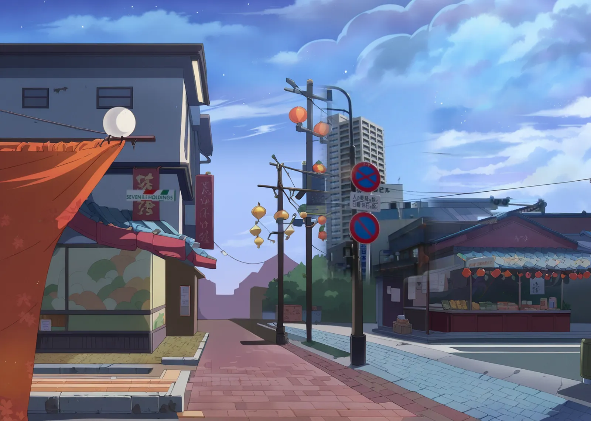
竹の塚西口 秋祭り 2026
10/3(土)
11:00〜15:00 中央通り（雨天開催）
吹奏楽の生演奏、玉こんにゃく無料、縁日、ワークショップ…
おまつりだ！
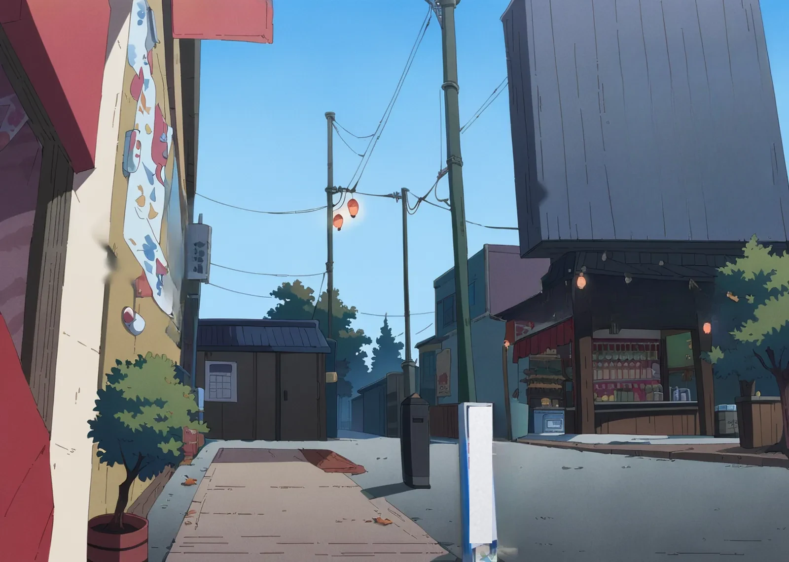
♪♫♩♬♪
Autumn Festival
竹の塚西口 秋祭り 2026 10/3(土)
11:00〜15:00 竹の塚西口 中央通り（雨天開催）／主催：竹の塚西口商店街 後援：伊興町自治会
今年も、地域の皆さまに楽しんでいただける「竹の塚西口商店街 秋祭り」を開催いたします。ごあいさつ全文 →
- 🎺第十四中学校 吹奏楽部 生演奏
- 🍢玉こんにゃく 無料無料
- 🍿ポップコーン・ソースせんべい無料
- 🎨ワークショップ無料
- 🎯縁日・特大わなげ無料
- 🎲ボードゲーム無料
- 📮スタンプラリー無料
- 🏅オリジナル缶バッジづくり無料
やったー！
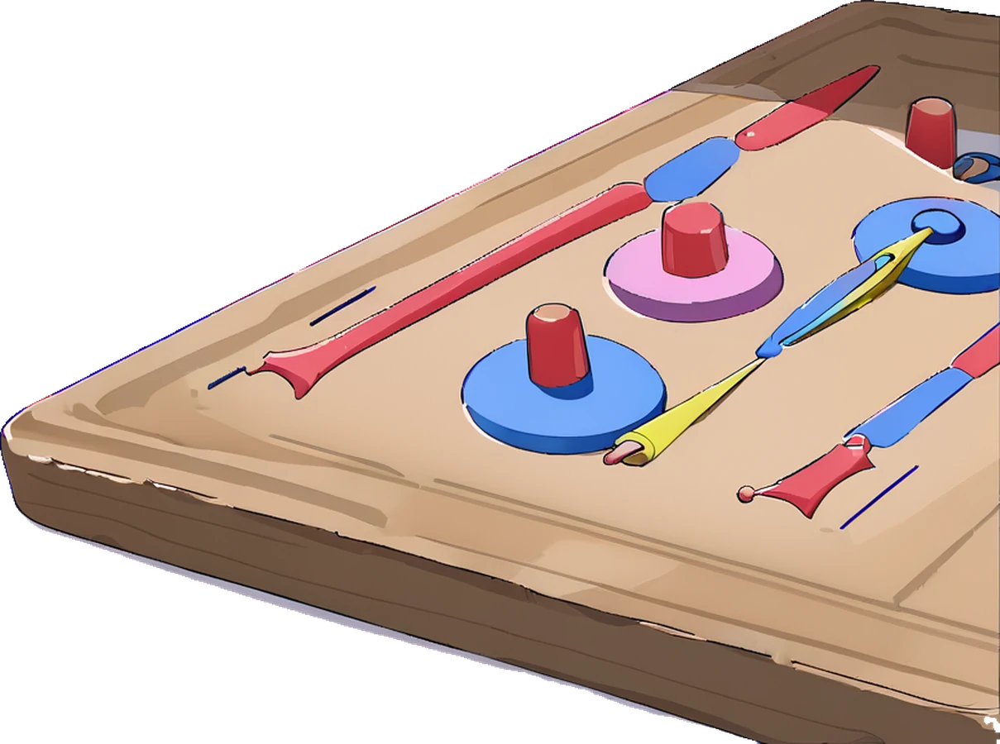
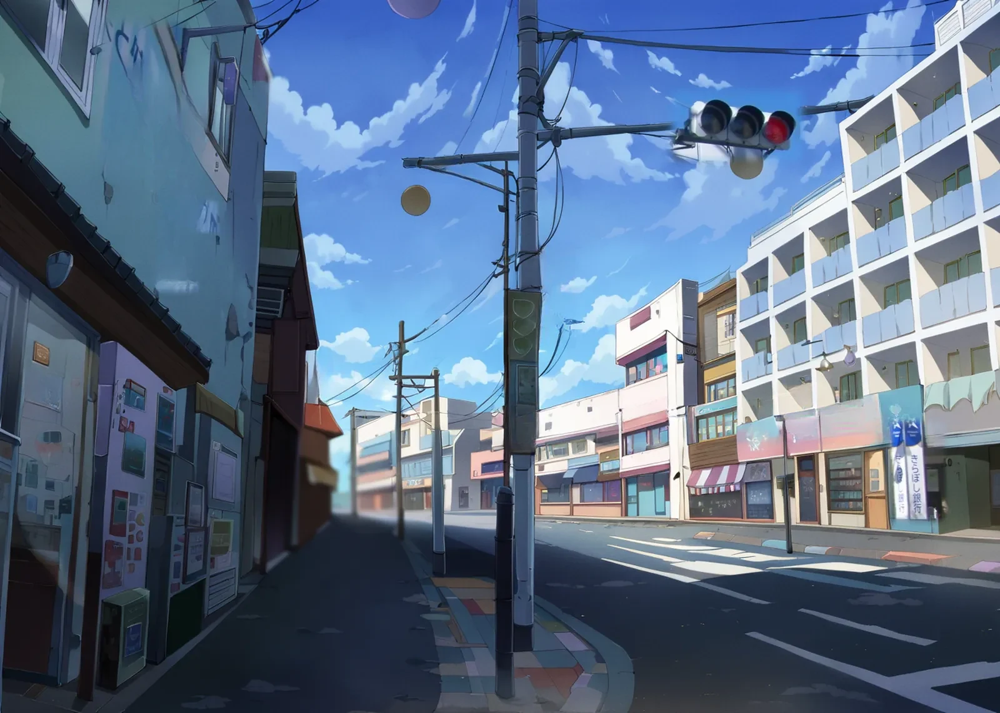
Recommend
帰り道にも、もう一軒。
子どもも大人も、暮らしの用事も。今日のおすすめ、3つだけ。
おう、おかえり
こんにちは、はるさん
Map
次は、どのお店へ？
店名をタップすると、お店の情報が下に出ます。
※ イラストマップのため、位置関係は簡略化しています。
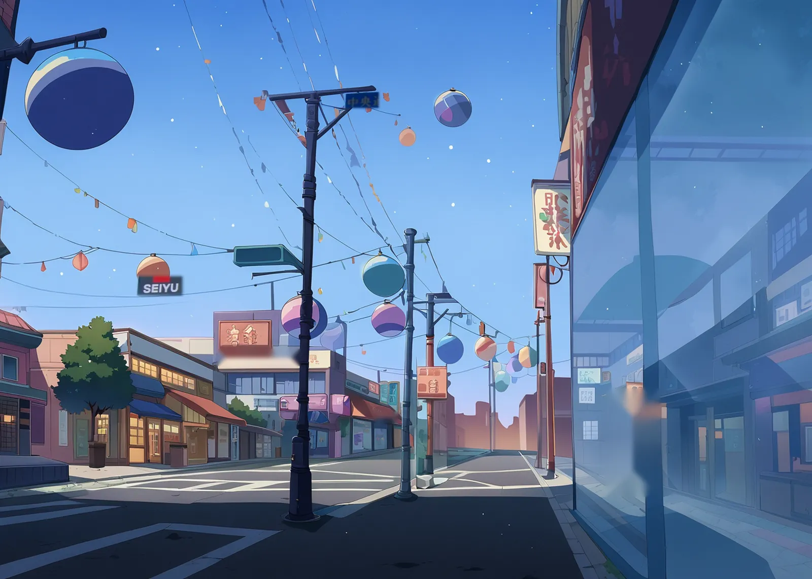
ACCESS
駅から、すぐそこ。
- 電車
- 東武スカイツリーライン「竹ノ塚駅」西口 すぐ
- バス
- 東武バス・都営バス「竹ノ塚駅西口」下車
- お車
- 専用駐車場はありません。周辺のコインパーキングをご利用ください
- 自転車
- 周辺の駐輪場をご利用ください
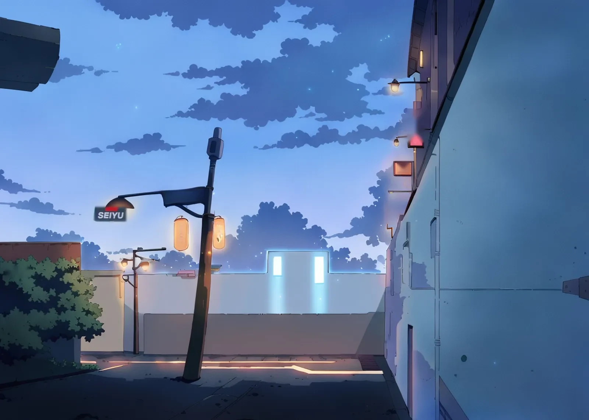